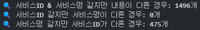
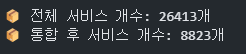
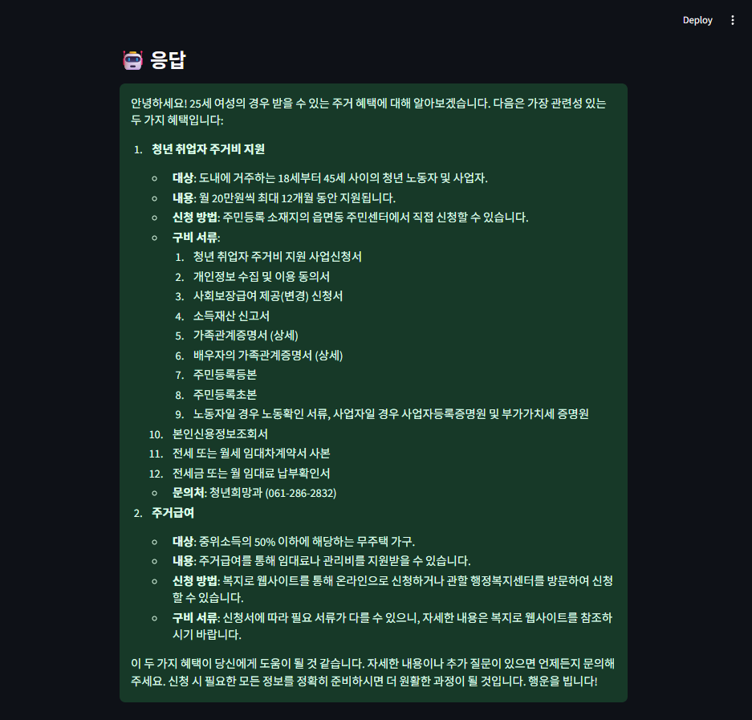
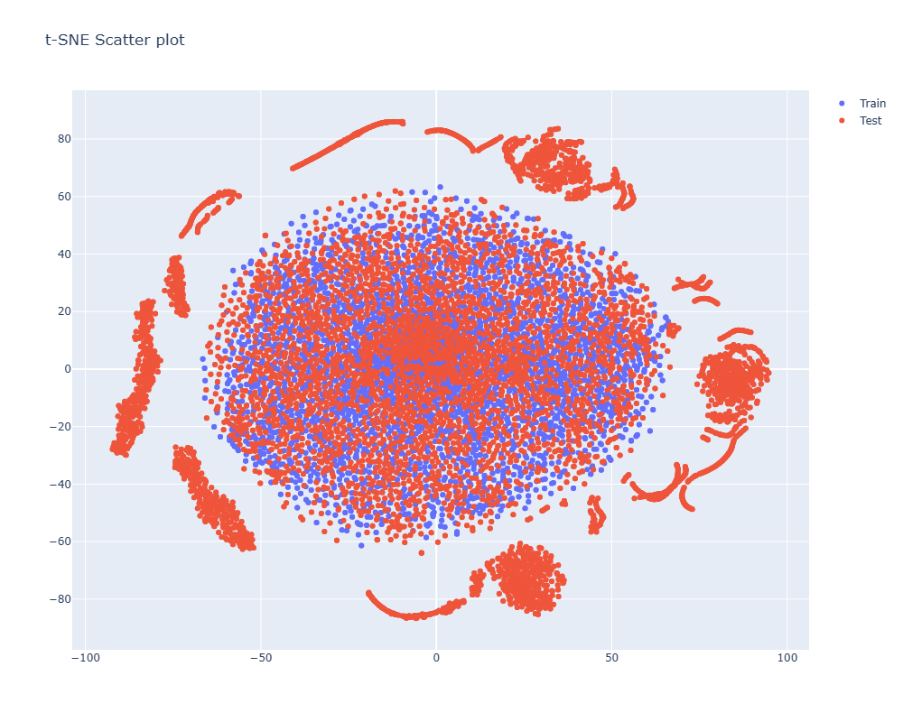
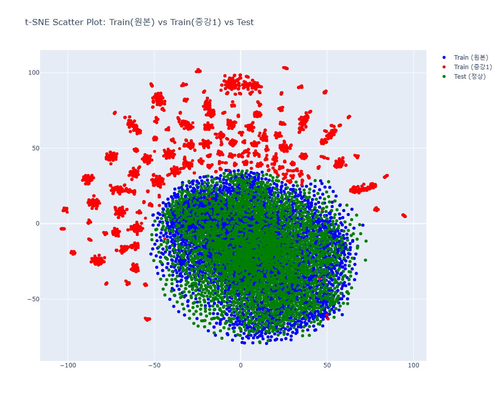
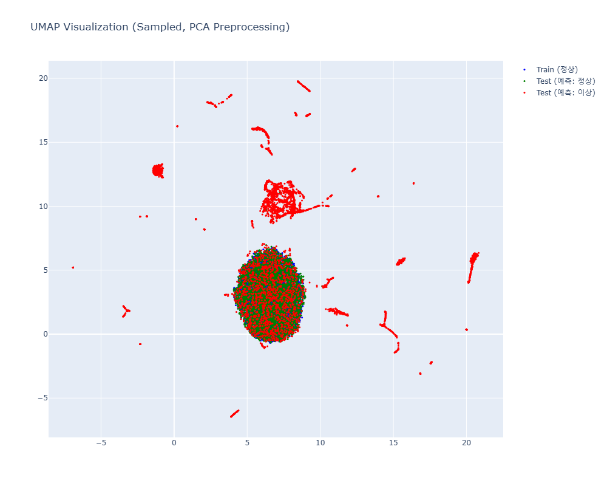

ABOUT ME
👤 이름: 김지후 🎂 생년: 1999년
🧭 신념: 모델의 성능은 복잡한 알고리즘보다도 데이터의 질에서 결정된다.
🙋 자기소개:
저는 데이터를 AI의 가장 핵심적인 요소로 생각합니다. 의미 있는 데이터를 수집하고 분석하여, 실질적인 가치를 창출하는 것을 목표로 합니다. 다양한 도메인의 데이터를 이해하고, 문제 해결에 적합한 전략을 제안할 수 있는 엔지니어가 되고자 합니다.
키워드:
📄 자격증
- 운전면허 1종보통 (2018.02)
- TOEIC Speaking IM3 (2025.04)
EDUCATION
-
경희대학교 국제캠퍼스
2018.03 ~ 2024.02학부: 생체의공학부 졸업 / 학점: 3.4 / 4.3
-
한국의료기기안전정보원 (RA)
2024.07 ~ 2024.08과정: RA 중기과정 3차 수료
-
UPSTAGE AI Lab
2024.11 ~ 2025.06과정: 6기 부트캠프 수료
SKILLS
💻 Hard Skills
 Python 상
Python 상 C++ 중
C++ 중 PyTorch 상
PyTorch 상 TensorFlow 중
TensorFlow 중Wandb 중
🧠 Soft Skills
- 🔍 문제 해결 능력: 다양한 예외 상황을 구조적으로 분석하고 해결하는 데 강점을 지니며, 트러블슈팅 경험이 풍부함
- 🤝 GitFlow 협업 경험: 브랜치 전략을 기반으로 팀원과의 협업과 코드 리뷰 경험 보유
📄 PROJECT 1: 문서 이미지 분류
🛠 주요 기능
✔ 다양한 문서 증강 기법(Augraphy, Albumentations) 적용
✔ Radon 변환 기반 Sinogram 실험 및 성능 분석
✔ YOLOv12로 타이틀 탐지 → 이미지 특징 보완
✔ Soft Voting 기반 앙상블 적용
단일 모델로는 문서 유형 간 경계가 애매한 경우 성능이 불안정해지는 문제가 있었기 때문에, ResNet50, EfficientNet-B3 등 서로 다른 아키텍처의 예측 확률을 평균하는 Soft Voting 기반 앙상블을 적용했습니다.
서로 다른 모델이 각기 다른 특징을 잘 포착함으로써, 오탐률이 높던 문서에서도 안정적인 예측 결과를 도출할 수 있었고, 전체 정확도를 향상시키는 데 기여했습니다.
또한 YOLO 기반 키워드 탐지 결과까지 반영하는 이중 앙상블 구조로 확장하여 최종 모델을 구성했습니다.
🐛 트러블슈팅
✔ 회전된 문서 대응 → sinogram 변환 기반 전처리 실험
배경: 학부 시절 Radon 변환을 이용해 CT 이미지의 sinogram 변환 및 역변환 코드를 작성한 경험이 있었습니다.
문제: test 데이터에 회전된 문서가 다수 포함되어 있었고, traing 데이터는 대부분 정방향으로만 존재했습니다.
가설: sinogram은 회전·이동에 불변성을 갖고, 노이즈도 주파수 기반으로 정리되므로 일반 이미지보다 robust할 수 있다고 판단했습니다.
결과: 전처리로는 효과가 있으나, 일반 CNN은 sinogram 특성을 학습하지 못해 성능 저하 발생. Radon-domain CNN 등 특화 구조 또는 증강용으로의 활용이 더 적합하다는 결론에 도달했습니다.
✔ 특정 문서에서 높은 오탐률 발생 → YOLOv12 기반 키워드 탐지로 보완
문제: 증강 데이터를 충분히 확보한 이후에도, 진단서·소견서 등 특정 문서 유형에서 높은 오탐률이 지속적으로 발생했습니다.
접근: 사람은 보통 문서 상단의 '진단서', '확인서' 등 키워드를 기준으로 문서 유형을 판단합니다. 이 점에 착안해, YOLOv12를 이용해 해당 키워드를 객체 탐지하고 분류 보조 정보로 활용하는 전략을 도입했습니다.
실행: 기본 분류 모델로는 ResNet과 EfficientNet을 사용하고, 특정 문서에 한해 YOLO 기반 재분류를 적용하는 이중 앙상블 구조를 설계했습니다.
결과: 정확도 0.8615 → 0.9832로 비약적인 성능 향상 달성.
🌟 성과
- ✔ wandb sweep을 통한 하이퍼파라미터 자동 탐색
- ✔ 최종 리더보드 1위 달성
▲ 최종 리더보드 성적
🔗 참고 링크
- 📄 상세 설명 문서: 프로젝트 상세 설명 링크
- 📁 GitHub 저장소: github.com/KJH121212/Document_Type_Classification.git
🧾 PROJECT 2: 정부지원금 추천 챗봇
🛠 주요 기능
✔ 정부24 JSON 데이터 통합 및 중복 제거
서로 구조가 다른 3종의 JSON 문서(detail.json, condition.json 등)를 서비스명을 기준으로 통합하고, 완전/부분 중복 항목을 제거하여 약 26,000건 → 8,800건으로 축소했습니다.
이 과정을 통해 임베딩 비용을 절감하고, 의미 있는 정보만 남기는 효율적인 데이터 구성에 성공했습니다.
 ✔ 변경 추적 기반 선택적 임베딩 구조 설계
기존 임베딩 데이터를 prev.json으로 저장해두고, 변경 여부를 서비스 ID 및 세부 필드 기준으로 탐지하여 새로 추가/변경된 항목만 재임베딩하는 구조를 구현했습니다.
이로써 전체 재처리 없이 최소한의 비용으로 데이터 업데이트가 가능해졌습니다.
✔ LangChain + Solar API 기반 RAG 파이프라인 구현
질문을 Solar API로 임베딩하고 FAISS로 문서를 검색한 후, 검색된 내용을 기반으로 프롬프트를 구성하여 응답을 생성하는 RAG 구조를 LangChain으로 설계했습니다.
또한, 응답에는 '지원 조건', '대상', '신청 방법'과 같은 핵심 항목이 명확히 드러나도록 프롬프트를 설계해 정확한 추천이 가능하도록 구성했습니다.
✔ GPT-4o → Solar Pro 모델 전환
초기에는 GPT-4o를 사용했으나, 한글 친화도 및 비용 효율성 측면에서 Upstage의 Solar Pro 모델로 전면 전환했습니다.
Solar Pro는 임베딩 비용이 GPT 대비 1/5 수준추천 응답의 품질이 향상
🐛 트러블슈팅
- 문자 수가 같더라도 실제 LLM이 인식하는 토큰 수는 다를 수 있음
- 의미 단위가 어색하게 끊기면 문맥 파악이 어렵고, 응답 품질 저하 발생
- 각 서비스가 고유한 `서비스ID`를 갖고 있어 비교가 명확함
- JSON 구조가 정형적이므로 필드 단위로 변경 사유 추적 가능
- 추가/변경/삭제 항목 구분 가능 (add, update)
- 백업 파일(`prev.json`) 자동 생성 및 비교 로직 구현 완료
✔ 문서 청크 분할 기준에 따른 문맥 손실 → 토큰 기반 분할로 해결
문제: 장문의 JSON 데이터를 청크로 나눌 때 문자 길이 기반 vs 토큰 개수 기반 중 어떤 방식을 선택할지 고민이 필요했습니다.
문자 길이 기반 분할의 한계:
해결: 문장이나 단락 단위로 자르되, 총 토큰 수가 일정 범위(예: 512~1024 tokens)를 넘지 않도록 분할
이유: LLM은 내부적으로 토큰 단위로 입력을 처리하므로, 문맥 단절을 최소화하고, 응답 일관성을 유지하기 위해 토큰 기반 분할이 성능상 유리하다고 판단했습니다.
✔ 임베딩 비용 과도 발생 → 중복 제거 기반 전처리로 해결
문제: 정부24에서 수집한 서비스 JSON 데이터를 그대로 임베딩할 경우 총 26,573건의 항목이 발생하여, 임베딩 비용이 비현실적으로 증가
해결: 서비스명/ID 기준 중복 항목을 탐지하고 병합 전략을 수립하여 데이터를 약 8,850건으로 압축했습니다. 성과: 문서 수가 약 3배 줄어 임베딩 비용을 대폭 절감했고, 데이터 품질도 향상되었습니다.
구분
처리 방식
통합 방식 상세
1. 서비스명/서비스ID 완전 동일
하나만 유지
완전히 동일한 항목 제거
2. ID/이름 같고 내용 다름
하나로 병합
조건은 리스트 병합, 문자열은 `||`, 딕셔너리는 key 기준 병합
3. 이름만 같고 ID 다름
하나로 병합
첫 ID 유지, 숫자 범위는 min/max 병합
✔ 문서 변경 시 전체 재임베딩 비효율 → 변경 추적 방식으로 해결
문제: 정부 서비스 문서가 갱신될 때마다 전체 문서를 재임베딩하는 방식은 시간과 비용 측면에서 매우 비효율적이었습니다.
해결: 이전 JSON(prev.json)과 새로운 JSON(new.json)을 비교하여, 변경된 항목만 재임베딩하도록 처리했습니다.
해시 기반 대신 구조 기반 비교를 선택한 이유:
| 유형 | 조건 | 처리 방식 |
|---|---|---|
| 추가됨 | new에만 존재 | 신규 임베딩 (add) |
| 변경됨 | 서비스ID는 동일하나 내용 변경됨 | 재임베딩 (update) |
| 삭제됨 | prev에만 존재 | update 처리 (vector DB에서 삭제는 미구현) |
한계: 삭제 항목은 향후 벡터 DB에서 제거하는 방향으로 개선 예정입니다.
🌟 성과
- ✔ 중복 제거 및 변경 감지 기반 전처리를 통해 전체 문서 수를 26,573건 → 8,850건으로 축소하여 임베딩 비용을 약 3배 절감
- ✔ 구조화된 비교 기반 변경 추적 시스템을 구현해 전체 재임베딩 없이 변경 문서만 선택적으로 반영
- ✔ 프롬프트 품질 개선 및 문서 필터링 전략을 통해 챗봇 응답의 정밀도 및 일관성 향상
- ✔ GPT-4o에서 Upstage Solar Pro로 전환하여 한국어 기반 응답 품질 향상 및 임베딩 단가 약 80% 절감
- ✔ 실제 정부 데이터를 활용한 RAG 기반 정부지원금 추천 챗봇 프로토타입을 Streamlit 인터페이스로 구현 
🔗 참고 링크
- 📄 상세 설명 문서: 프로젝트 상세 설명 링크
- 📁 GitHub 저장소: github.com/KJH121212/Smart_Subsidy_Finder.git
🧪 PROJECT 3: 화학 공정 이상 탐지
🛠 주요 기능
- Isolation Forest: 트리 기반 랜덤 분할로 외곽 데이터 탐지
- One-Class SVM: 커널 기반 경계를 학습해 외부 데이터를 이상으로 분류
- AutoEncoder: 재구성 오차 기반 이상 탐지
- Deep SVDD: 데이터 중심 구 형태로 압축하고 중심에서 멀어진 샘플을 이상으로 간주
✔ 이상 탐지를 위한 시각화 기반 EDA 설계
이상 데이터가 제공되지 않은 상황에서, t-SNE 기반 시각화를 통해 test(이상) 데이터에 존재하는 숨은 이상 패턴을 탐색하였습니다.
이를 통해 train(정상)과 test(이상) 간의 분포 차이를 파악하고, 비지도 기반 이상 탐지 모델로의 전환을 설계할 수 있었습니다.
▲ t-SNE 시각화를 통해 train과 test 간 분포 차이가 명확히 드러남
✔ 이상치 유사 데이터 증강 전략 실험
이상치를 포함한 테스트 환경에 대응하기 위해 이상치 유사 특성을 가지는 증강 데이터를 생성하고 노이즈 추가·시계열 분할 등의 방식을 적용하였습니다.
그러나 실제 이상 분포를 왜곡하는 문제가 발생해 해당 전략은 폐기하고, 도메인 기반 후처리 중심의 접근으로 전환하였습니다.
▲ 증강 데이터가 실제 이상치 분포를 덮어버리고 오히려 새로운 패턴을 만들어 train/test 간 구분이 흐려진 모습
✔ 주요 모델 구성 및 적용 전략
비지도 또는 준지도 기반의 이상 탐지 모델 4종을 실험하고 비교하였습니다:
최종적으로 Deep SVDD + run 단위 후처리 전략 조합이 가장 우수한 성능(F1-score 0.95 이상)을 보여 최종 채택하였습니다.
✔ run 단위 후처리 전략 설계
테스트 데이터가 50개 단위(run)로 구성된다는 점을 활용하여, 5% 이상 이상 샘플이 포함된 run 전체를 이상으로 판단하는 전략을 도입하였습니다.
이 전략은 이상 탐지의 일관성을 보완하며 F1-score: 0.6534 → 0.9520, Accuracy: 0.6703 → 0.9703으로 크게 향상시켰습니다.
🐛 트러블슈팅
✔ 이상치가 없는 학습 데이터 → 시각화 기반 경계 모델로 전환
문제: 학습 데이터(train)는 전부 정상 샘플로만 구성되어 있어, 지도학습 기반 이상 탐지 모델이 실제 이상 패턴을 학습하지 못하는 구조적 한계가 있었습니다.
접근: t-SNE와 U-MAP 시각화를 통해 train/test 데이터를 비교한 결과, test 데이터에서는 일부 군집이 train과 명확히 분리되어 이상치처럼 보이는 패턴이 나타났습니다.
▲ 시각화 결과: train은 중심부에 모여 있는 반면, test 데이터는 외곽에 분리된 군집으로 존재 → 이상치로 간주 가능
해결: 이 분포 차이를 기준으로, 차원 축소 후 군집 경계를 학습하고 경계 바깥을 이상으로 판단하는 비지도 모델(예: Isolation Forest, One-Class SVM 등)을 적용하여 성능을 개선했습니다.
✔ 증강 데이터가 실제 이상 분포를 왜곡하여 성능 저하
문제: 이상치 데이터가 존재하지 않기 때문에 노이즈 추가, 시계열 분할/재조합 등의 기법으로 이상치 유사 데이터를 생성하는 증강 전략을 시도하였습니다.
접근: t-SNE 시각화를 통해 train/test/aug 데이터를 비교한 결과, 기존 test 데이터에서 발견되던 이상치 군집이 증강 이후에는 사라지고 새로운 분포가 형성되는 현상이 확인되었습니다.
▲ train(정상), test(이상 포함), augmented(이상 유사 생성) 데이터의 t-SNE 시각화 비교: test에서 나타났던 이상치로 보이는 군집들이 증강 데이터에 의해 덮이며 새로운 분포를 형성 → 실제 이상 분포가 소실됨
해결: 해당 증강 전략은 이상 탐지에 적합하지 않다고 판단하여 실험을 폐기하고 도메인 기반 후처리 전략으로 전환하였습니다.
✔ 모델의 한계 → run 단위 후처리 전략 설계
문제: AutoEncoder 기반 이상 탐지 모델이 다른 모델이 가장 높은 성능을 보였으나, 이는 training 군집 내부에 위치한 이상치까지 포착했기 때문이라고 판단했습니다.
분석: 비정상 시뮬레이션이 정상 군집 내부에 위치할 경우, 머신러닝 모델 관점에서는 이를 정상처럼 인식하게 되어 해당 이상치를 구분해내는 데 구조적 한계가 있었습니다. 이는 모델 입장에서 경계 바깥은 이상치로 탐지할 수 있지만, 군집 내부 이상치는 식별이 어렵다는 점을 뜻합니다.
▲ AutoEncoder 기반 이상 탐지 결과 시각화: 군집 내부에 일부 비정상(simulation) 샘플이 포함되어 있음에도 모델은 정상으로 간주함
해결: 테스트 데이터가 50개 단위(run)로 구성되어 있다는 점에 착안하여, 한 run에 5% 이상의 이상 샘플이 존재하면 전체 run을 이상으로 판단하는 후처리 규칙을 설계했습니다.
결과: 이 전략을 적용한 결과, F1-score와 Accuracy가 각각 약 0.65 → 0.95, 0.67 → 0.97로 크게 향상되었습니다. 아래 성과 항목에서 자세한 수치를 확인할 수 있습니다.
🌟 성과
- ✔ t-SNE 시각화를 통해 학습-테스트 분포 차이를 인지하고, 실제 이상 탐지 실패 원인을 분석
- ✔ run 단위 이상 판단 전략을 도입하여 이상 탐지 정확도(F1-score, Accuracy)를 크게 향상
- ✔ 최종 리더보드 1위 달성
| 구분 | F1-score | Accuracy |
|---|---|---|
| 전략 적용 전 | 0.6534 | 0.6703 |
| 전략 적용 후 | 0.9520 | 0.9703 |
▲ 최종 리더보드 성적
🔗 참고 링크
- 📄 상세 설명 문서: 프로젝트 상세 설명 링크
- 📁 GitHub 저장소: github.com/KJH121212/07_Chemical_process_anomaly_detection.git
📂 PROJECTS
지금까지 수행한 모든 프로젝트를 아래 표에 정리했습니다.
프로젝트명을 클릭하면 각 프로젝트의 상세 페이지로 이동하여 주요 기능, 트러블슈팅, 성과 등을 확인할 수 있습니다.
| 프로젝트명 (상세 링크) | 설명 | 기간 |
|---|---|---|
| 📈 코로나 확진자수 예측 (졸업논문) | LSTM 기반 시계열 예측 + 외부 변수 실험 | 2023.09 ~ 2023.12 |
| 🏠 아파트 실거래가 예측 | 서울시 실거래가 회귀 분석 및 Permutation Importance | 2024.12.23 ~ 2025.01.07 |
| 📄 문서 이미지 분류 | 문서 이미지 분류 + YOLO 타이틀 탐지 앙상블 | 2025.02.14 ~ 2025.02.25 |
| 🗣️ 일상대화 요약 시스템 | KoBART 기반 대화요약 및 Wandb 연동 학습 | 2025.03.12 ~ 2025.03.24 |
| 🤖 정부지원금 추천 챗봇 | Solar API 기반 정부 보조금 추천 RAG 챗봇 | 2025.03.01 ~ 2025.04.15 |
| 🧬 과학 상식 QA 시스템 | RAG + 함수 호출 기반 과학 지식 질의 응답 시스템 | 2025.04.16 ~ 2025.04.21 |
| 🧪 화학 공정 이상 탐지 | 공정 시뮬레이션 로그 기반 이상 탐지 모델링 및 시각화 | 2025.04.23 ~ 2025.05.06 |
| 🧠 FLUENT - 실시간 종족 지식 기반 AI 음성 챗봇 | RAG 기반 종족 정보 검색 + 음성 대화 통합 챗봇 | 2025.05.09 ~ 2025.06.05 |
📬 CONTACT
📧 Email: jihu6033@gmail.com
☎️ Phone: 010-3389-8271
🖥️ GitHub: github.com/KJH121212
🔗 Portfolio: kjh121212.github.io/KJH121212/